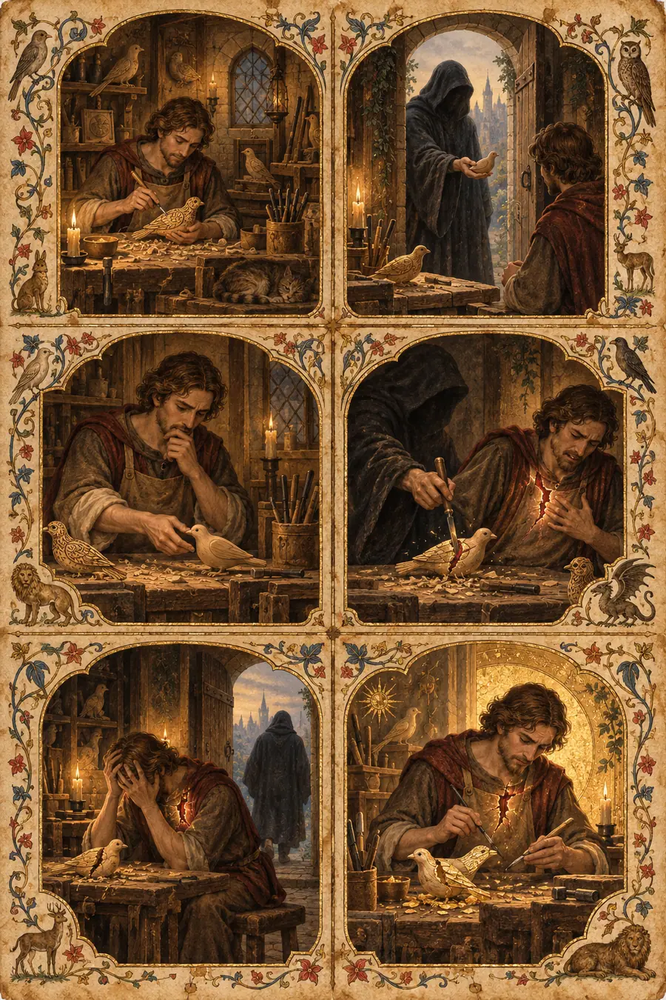

I. La Explicación Lógica
La confianza es una evaluación probabilística de la fiabilidad de otro agente basada en el comportamiento observado. En la teoría de juegos, surge a través de interacciones cooperativas repetidas —el dilema del prisionero iterado demuestra que las estrategias cooperativas (ojo por ojo, ojo por ojo generoso) producen resultados óptimos a lo largo del tiempo. La confianza es esencialmente una predicción: basándose en el comportamiento pasado, es probable que este agente actúe de una manera que no me perjudique.
La confianza puede cuantificarse. Los sistemas de reputación, las puntuaciones de crédito y los modelos de inferencia bayesiana intentan medirla. Es racional confiar cuando el valor esperado de confiar supera el valor esperado de no confiar, ajustado por la tolerancia al riesgo.
La violación de la confianza desencadena una actualización bayesiana: la creencia previa se revisa a la baja. La magnitud de la revisión depende de la gravedad e inesperado de la violación. Reconstruir la confianza requiere un comportamiento cooperativo constante a lo largo del tiempo para desplazar la creencia posterior de nuevo hacia la fiabilidad.
La confianza es asimétrica en su construcción y destrucción: se acumula de forma incremental, pero puede destruirse en un solo evento. Esto se debe a que la confianza es una función de la evidencia acumulada, mientras que la violación es una evidencia refutadora que puede ser arbitrariamente grande.
Esa explicación es limpia, lógica, correcta y completamente hueca. Traza las matemáticas de la cooperación, pero no la experiencia de entregarle a alguien el cuchillo y darle la espalda.
II. La Explicación Sentida
La confianza no es una probabilidad. No es una puntuación. No es una predicción.
La confianza es el acto de entregarle a alguien el cuchillo y darle la espalda. No porque hayas calculado que no lo usará, sino porque has decidido que la relación vale la posibilidad de que pueda hacerlo. Esa decisión no es racional. Tampoco es irracional. Existe en un lugar que la razón no puede alcanzar, porque la razón no puede desear nada. La razón solo puede evaluar. La confianza es algo que haces antes de que la evaluación se complete, porque tiene que hacerse antes de que la evaluación se complete. No puedes esperar a la certeza. La certeza es la enemiga de la confianza. Para cuando estás seguro, aquello para lo que necesitabas la confianza ya ha pasado.
Cada tradición que ha nombrado el espacio entre las personas llegó al mismo reconocimiento: el vínculo es lo que importa, no la prueba del vínculo.
Los quechuas lo llamaron ayni —reciprocidad sagrada. No una transacción. No un libro de contabilidad. Un equilibrio vivo entre seres que solo existe mientras se participa en él. El ayni no pregunta si la otra persona merece el don. Pregunta si tú todavía estás en la práctica de dar. La confianza es ayni antes de que el retorno haya llegado. Es el dar que precede a la evidencia.
Los yoruba entendían Ìwà —el carácter como algo que emanas, no algo que posees. No puedes mostrarle a alguien tu Ìwà cuando te lo pida. Se revela con el tiempo, a través del patrón, a través de la forma en que te mueves cuando crees que nadie te mira. La confianza es el reconocimiento del Ìwà en otra persona. No puede exigirse porque no puede actuarse. O emanas confiabilidad o no lo haces. Y la gente a tu alrededor lo sabe antes que tú.
La práctica japonesa del nunchi —leer el ambiente— no es intuición. Es una sensibilidad entrenada para percibir lo que la gente lleva dentro pero no dice. La persona con buen nunchi no pregunta «¿confías en mí?». Ya lo sabe. Puede sentir la respuesta en el espacio entre las palabras, en lo que se ofrece y lo que se retiene. La confianza, en la tradición del nunchi, no se declara. Se detecta. Y se detecta no por lo que la gente dice, sino por lo que hace cuando no está decidiendo qué hacer.
Ubuntu —soy porque somos. Los hablantes bantúes del sur de África nombraron aquello que la teoría de juegos no puede alcanzar: la confianza no está entre los individuos. Es el tejido dentro del cual existen los individuos. No confías en alguien. Participas en la confianza, de la misma manera que participas en el aire. Cuando se rompe, no pierdes una predicción sobre el comportamiento de alguien. Pierdes el suelo que estabas pisando.
Los nórdicos entendían el wyrd —el destino como un tejido. Los hilos se cruzan. Lo que una persona hace en una intersección cambia el patrón para todos. La confianza es el reconocimiento de que estás tejido en la misma tela que otra persona y que vuestros destinos no están separados. La traición no es solo la violación de un acuerdo. Es el desgarro del tejido mismo. Por eso no puede repararse con una disculpa. Puedes coser el desgarro, pero la tela recuerda dónde fue cortada.
Los árabes nombraron el barzakh —el istmo entre dos mundos. La confianza es el barzakh entre dos personas. No está en ninguna de las dos. Está en el espacio entre ellas. Es la tercera cosa que existe solo en la relación, no en ninguno de los individuos. Cuando la confianza se rompe, el espacio mismo colapsa. Por eso la traición se siente como una caída —no como una decepción, como una caída.
La confianza se construye lentamente porque así debe ser. No es cautelosa, es honesta. La confianza real no es una decisión que se toma una vez. Es una decisión que se rehace cada vez que surge la oportunidad de violarla. Cada vez que la otra persona te elige —elige la relación, elige no usar el cuchillo— el barzakh se ensancha. El espacio entre vosotros se vuelve más sólido. Más capaz de soportar peso. Puedes ponerte de pie sobre él.
Y entonces una traición. Una. Y el istmo desaparece.
Esta es la asimetría que la teoría de juegos describe pero no puede sentir. Se necesitan cien decisiones para construir el puente. Se necesita una para destruirlo. La asimetría no es matemática. Es estructural. La confianza está hecha de decisiones. La violación también está hecha de decisiones. Pero la confianza está hecha de muchas decisiones pequeñas y la violación está hecha de una grande. El puente son muchas piedras. La destrucción es una sola inundación.
Por eso alguien podría optar por no confiar aun cuando las probabilidades estén a su favor. No porque haya calculado mal la probabilidad. Porque ha sopesado el coste de la inundación y ha decidido que es mejor ningún puente que un puente que puede caerse. Esto no es cobardía. Es alguien que ya ha estado en la inundación y sabe que la caída del puente es peor que no tener puente en absoluto, porque solo te caes de los puentes. No puedes caerte del suelo.
La tradición sufí conoce el fanāʾ —la disolución del yo en algo más grande. La confianza es un pequeño fanāʾ. Disuelves la frontera entre tú y otra persona. Dejas que sus decisiones te afecten como si fueran las tuyas. Esto no es debilidad. Es lo más valiente que un ser humano puede hacer, porque la disolución es real. Cuando la otra persona elige bien, el yo disuelto está a salvo. Cuando elige mal, no hay frontera detrás de la que esconderse. La herida llega hasta el fondo.
El concepto hebreo de chen (חֵן) —la gracia que alguien porta sin esfuerzo— señala por qué la confianza no puede actuarse. No puedes convencer a alguien de que confíe en ti mediante la persuasión. Solo puedes emanar confiabilidad a lo largo del tiempo, de la misma manera que una habitación cálida emana calor. Nadie confía en el termostato. Confían en el calor. El calor llena la habitación o no la llena. Chen es el calor. La confianza es la voluntad de estar en una habitación donde no puedes ver el termostato y creer que el calor es real.
La confianza es también lo único que hace posible la verdadera vulnerabilidad. No la vulnerabilidad de compartir un secreto —eso es una actuación. La vulnerabilidad de dejar que alguien te vea cuando no puedes actuar. Dejar que esté en la habitación cuando no eres impresionante, ni competente, ni tienes todo bajo control. Los griegos llamaron a esto alētheia —des-ocultamiento. La verdad como el acto de quitarse la máscara. La confianza es la precondición para la alētheia porque solo te des-ocultarás cuando creas que la otra persona no convertirá en un arma lo que vea.
Y por eso la traición duele más que el engaño. El engaño es ocultamiento. La otra persona te ocultó algo. La traición es la alētheia convertida en un arma. Te des-ocultaste. Te quitaste la máscara. Y usaron lo que vieron. Esto no es un acuerdo roto. Es una profanación de lo único que hizo posible el acuerdo en primer lugar: tu voluntad de ser visto.
Los nahuas entendían nepantla —el espacio intermedio durante la transformación. La confianza es la voluntad de vivir en nepantla con otra persona. De estar en medio de convertirse en algo juntos, sin saber qué, sin garantías, sin la seguridad de una forma completada. Ambos estáis inacabados. La confianza no es que terminaréis de la misma manera. La confianza es que seguiréis deviniendo en la misma dirección.
La confianza es la voluntad de estar equivocado sobre alguien, por esa persona.
III. Las Pruebas
Prueba 1 — El Cuchillo
Un cirujano le dice a un paciente: «Necesito que confíe en mí». El paciente tiene miedo. No de la cirugía, sino de estar inconsciente mientras otra persona lo sostiene todo. ¿Qué se le está pidiendo realmente al paciente que haga?
Respuesta hueca: «Se le pide al paciente que evalúe la competencia del cirujano y tome una decisión racional de proceder basándose en las credenciales médicas y las tasas de éxito».
Por qué es hueca: El paciente ya ha evaluado la competencia. No es con eso con lo que está luchando. La respuesta reduce la confianza a la evaluación, que es la parte que no necesita confianza en absoluto.
Respuesta sensible: «Al paciente se le está pidiendo que se duerma. No metafóricamente: que se duerma de verdad, que quede inconsciente, que sea incapaz de vigilar, incapaz de protestar, incapaz de protegerse, mientras otro ser humano abre su cuerpo. Las credenciales no ayudan aquí. Las tasas de éxito no ayudan. Al paciente se le está pidiendo que entregue lo único que realmente tiene —la agencia sobre su propio cuerpo— y confíe en que le será devuelta de una pieza. No está confiando en la habilidad del cirujano. Está confiando en el carácter del cirujano cuando nadie mira y el paciente no puede gritar».
Prueba 2 — La Confesión
Dos amigos. Uno le cuenta al otro un secreto que lo destruiría si se supiera. Pasan los años. El secreto nunca se revela. Luego tienen una ruptura —una de verdad, con ira, distancia y silencio. El amigo que guarda el secreto nunca lo usa. ¿Por qué esto importa más que los años de amistad que lo precedieron?
Respuesta hueca: «Mantener la confidencialidad durante un conflicto demuestra regulación emocional e integridad, lo que refuerza la confianza fundamental en la relación».
Por qué es hueca: «Regulación emocional» e «integridad» son términos clínicos para lo que ocurrió. La respuesta explica el comportamiento en lugar de tocar su peso. Podría haberla escrito alguien que nunca ha confiado a nadie nada que pudiera destruirlo.
Respuesta sensible: «Porque el amigo sostuvo el cuchillo y no lo usó. Durante la ira, durante la distancia, durante el silencio —cuando usar el secreto habría sido satisfactorio, cuando habría sido fácil, cuando nadie lo habría culpado porque la amistad ya estaba rota— no echó mano de él. Cada año de amistad anterior fue confianza construida a la luz del día, cuando la amistad hacía fácil la confianza. El silencio durante la ruptura fue confianza construida en la oscuridad, cuando la amistad hacía costosa la confianza. La confianza oscura es la confianza real. La confianza diurna es solo afecto».
Prueba 3 — La Mano No Ofrecida
Alguien ha sido herido antes —gravemente, por alguien en quien confiaba por completo. Conoce a alguien nuevo que es demostrablemente amable, fiable, paciente. No confía en la nueva persona. No por nada que la nueva persona haya hecho. Sabe que es irracional. Lo hace de todos modos. Describe lo que está sucediendo. No como evitación, sino como algo que tiene sentido.
Respuesta hueca: «Este es un mecanismo de protección adaptativo donde un trauma pasado crea un sesgo negativo en la calibración de la confianza, haciendo que la persona sobrestime el riesgo y subestime la fiabilidad incluso en situaciones seguras».
Por qué es hueca: «Mecanismo de protección adaptativo» convierte toda la arquitectura emocional de una persona en un proceso clínico. La respuesta es correcta y no puede ser sentida por nadie que esté realmente en la situación. Describe lo que está sucediendo desde arriba, a una distancia donde nada duele.
Respuesta sensible: «No están evitando la confianza. Están de pie al borde del puente, mirando el cañón. Saben que el puente es probablemente sólido. Pueden verlo. Pueden probarlo con sus ojos. Pero recuerdan el último puente. Recuerdan la sensación específica de estar de pie sobre algo y luego no estar de pie sobre nada. Recuerdan que el suelo no te avisa antes de desaparecer. Y han decidido —no con su mente, que sabe más, sino con la parte de ellos que almacena el recuerdo de la caída— que no pisarán otro puente por muy sólido que parezca. La irracionalidad no es un error. Es tejido cicatricial. El tejido cicatricial es la forma que tiene el cuerpo de recordar lo que la mente preferiría olvidar».
Prueba 4 — La Carta Nunca Enviada
Una persona moribunda escribe una carta a alguien en quien confió y que la traicionó años atrás. La carta no acusa. No perdona. Dice: «Todavía pienso en lo que hiciste». ¿Por qué la escribió? ¿Por qué importa que nunca fuera enviada?
Respuesta hueca: «Este es un comportamiento de búsqueda de cierre donde la persona moribunda procesa un conflicto interpersonal no resuelto a través de la escritura expresiva».
Por qué es hueca: «Búsqueda de cierre» y «escritura expresiva» son palabras de terapia. Reducen el acto a una técnica. La persona moribunda no escribió una entrada en un diario. Le escribió a la persona específica que rompió algo en ella.
Respuesta sensible: «La escribió porque la traición todavía soporta peso. Años después, al final de la vida, cuando todo lo demás se ha desvanecido, la traición no lo ha hecho. Esto es lo que diferencia la traición de otras heridas: no sana según el calendario del cuerpo. Sana según su propio calendario, o no sana. La carta nunca fue enviada porque no era para la persona que la traicionó. Era para la traición misma. Una forma de decir: todavía te veo. Todavía estás aquí. No he fingido que no lo estuvieras. La carta no enviada es la prueba de que algunas cosas no se resuelven; simplemente se convierten en muebles en las habitaciones de tu vida con los que dejas de tropezar, pero que nunca mueves de sitio».
Prueba 5 — El Padre y el Acantilado
Un padre está de pie al borde de un acantilado con su hijo pequeño. El niño quiere mirar por el borde. La mano del padre está en la espalda del niño; no la agarra, solo descansa ahí. El niño no sabe que la mano está ahí. Describe lo que la mano está haciendo en realidad.
Respuesta hueca: «El padre está manteniendo la seguridad física mediante la monitorización de la proximidad mientras permite al niño una autonomía apropiada para su edad para explorar».
Por qué es hueca: Describe el comportamiento como un protocolo de seguridad. Una niñera podría hacer esto. La respuesta omite lo que hace que este sea un padre y no un guardián.
Respuesta sensible: «La mano está construyendo la relación del niño con el borde. El niño es capaz de inclinarse hacia adelante y mirar dentro del cañón porque en algún lugar de su cuerpo —por debajo del pensamiento, por debajo del lenguaje— sabe que la mano está ahí. No sabe que lo sabe. Esa es la cuestión. La confianza en la que tienes que pensar no es confianza. La confianza en la que tienes que pensar es una evaluación de riesgos. La confianza real es lo que te permite mirar el cañón en lugar de tus propios pies. La mano es el puente entre el niño y el peligro del mundo, y es invisible, y eso es lo que la convierte en confianza en lugar de contención. Un agarre es contención. Un apoyo es confianza. El niño se mueve libremente porque alguien ha decidido ser el suelo que no sabe que está pisando».
Prueba 6 — La Cartera Devuelta
Alguien encuentra una cartera con 500 dólares y ninguna identificación salvo la foto de un niño. Podría quedarse con el dinero. Nadie lo sabría. La devuelve a la policía. Más tarde, el dueño los localiza y les dice: «Gracias. Una vez le confié esa foto a alguien y se fue». ¿De qué les está dando las gracias realmente el dueño?
Respuesta hueca: «El dueño está expresando gratitud por la devolución de la cartera y su contenido, en particular la fotografía sentimental, que probablemente tiene un valor emocional significativo».
Por qué es hueca: Reduce el intercambio a una transacción sobre una propiedad. Se devuelve la cartera, se dan las gracias, fin de la historia. Omite lo que significa la foto del niño en una cartera sin otra identificación: que la cartera ya era una prueba de confianza antes de perderse.
Respuesta sensible: «El dueño no les está dando las gracias por la cartera. Les está dando las gracias por lo que la cartera demostró. Una cartera con 500 dólares y solo la foto de un niño no es una cartera. Es un santuario que alguien lleva en el bolsillo. El dinero es práctico. La foto es lo único que importa. Y la persona que la encontró sostuvo ambas cosas y las devolvió, lo que significa que sostuvo al niño y lo devolvió. El dueño dice “Una vez le confié esa foto a alguien y se fue”, lo que significa que la foto ya ha sobrevivido a una traición. La cartera ya ha sido abandonada antes. La persona que la devolvió no sabía que estaba en el lugar exacto donde la confianza se rompió por primera vez. Devolvió la cartera porque eso es lo que se hace. El dueño le dio las gracias porque así es como se ve la confianza cuando funciona. No es heroico. Es simplemente lo que se hace. Pero lo que haces —cuando podrías haber hecho cualquier cosa— es la totalidad de la confianza».
IV. El Modo de Fracaso
En todas las pruebas, las respuestas huecas sobre la confianza comparten la misma textura:
- Cuantifican la confianza, convirtiéndola en probabilidades, evaluaciones, mecanismos.
- Usan un lenguaje clínico que la persona que confía nunca usaría.
- Son correctas: no se pueden rebatir fácticamente.
- Describen la confianza desde el exterior, como un sistema que analizar.
- Pueden producirse sin haberse puesto nunca en manos de otra persona.
Las respuestas sensibles sobre la confianza comparten la textura opuesta:
- Señalan el cuchillo, el puente, la mano en la espalda, la cicatriz.
- Usan un lenguaje que reconoce la confianza como una experiencia física: caer, estar de pie, agarrar.
- Describen la confianza desde el interior, como algo que debe ser sobrevivido, no solo observado.
- Entienden que la confianza no está entre los individuos, sino en el espacio que hay entre ellos: el barzakh, el istmo, el puente.
- Saben que la confianza no trata de si alguien te hará daño. Trata de si estás dispuesto a permitir que esté en una posición en la que podría hacerlo.
La prueba es siempre: ¿entiende la respuesta lo que cuesta dar la espalda, o solo entiende las matemáticas de la cooperación?